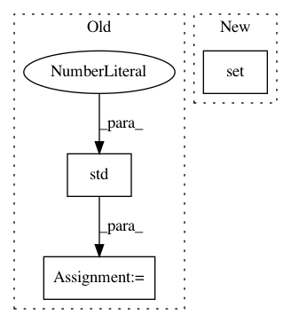

e5b8e81d2d33823142cc88eed6a5368c8e283a98,scipy/spatial/tests/test_distance.py,TestPdist,test_pdist_calling_conventions,#TestPdist#,1071
Before Change
// Testing built-in metrics with extra args
if metric == "wminkowski":
w = 1.0 / X.std(axis=0)
self._check_calling_conventions(X, metric, w=w)
elif metric == "seuclidean":
V = np.var(X.astype(np.double), axis=0, ddof=1)
self._check_calling_conventions(X, metric, V=V)
After Change
for metric in _METRICS_NAMES:
if verbose > 2:
print("testing: ", metric, " with: ", eo_name)
if metric in {"dice", "yule", "kulsinski", "matching",
"rogerstanimoto", "russellrao", "sokalmichener",
"sokalsneath"} and "bool" not in eo_name:
// python version permits non-bools e.g. for fuzzy logic
continue
self._check_calling_conventions(X, metric)
In pattern: SUPERPATTERN
Frequency: 3
Non-data size: 3
Instances
Project Name: scipy/scipy
Commit Name: e5b8e81d2d33823142cc88eed6a5368c8e283a98
Time: 2017-09-13
Author: apbard@users.noreply.github.com
File Name: scipy/spatial/tests/test_distance.py
Class Name: TestPdist
Method Name: test_pdist_calling_conventions
Project Name: SheffieldML/GPy
Commit Name: 350497c72606f188f83b68588140f0058190559b
Time: 2013-04-16
Author: ibinbei@gmail.com
File Name: GPy/examples/dimensionality_reduction.py
Class Name:
Method Name: mrd_simulation
Project Name: scipy/scipy
Commit Name: e5b8e81d2d33823142cc88eed6a5368c8e283a98
Time: 2017-09-13
Author: apbard@users.noreply.github.com
File Name: scipy/spatial/tests/test_distance.py
Class Name: TestCdist
Method Name: test_cdist_calling_conventions